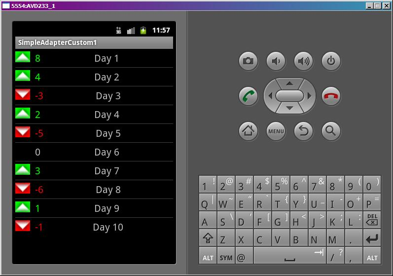

В этом уроке:
- используем методы SetViewText и SetViewImage
Мы уже знаем, что SimpleAdapter умеет вставлять текст в TextView элементы и изображения в ImageView. Он использует для этого методы SetViewText и SetViewImage. Мы можем создать свой адаптер на основе SimpleAdapter и реализовать эти методы под наши цели.
Эти методы предоставляют нам View и данные, а значит мы можем менять View в зависимости от данных. В качестве примера, сделаем список, отражающий динамику некоего показателя в разрезе дней. Если динамика положительная – будем разукрашивать элементы в зеленый цвет, если отрицательная – в красный.
Создадим проект:
Project name: P0491_SimpleAdapterCustom1
Build Target: Android 4.0
Application name: SimpleAdapterCustom1
Package name: ru.startandroid.develop.p0491simpleadaptercustom1
Create Activity: MainActivity
Рисуем экран main.xml:
<?xml version="1.0" encoding="utf-8"?>
<LinearLayout
xmlns:android="http://schemas.android.com/apk/res/android"
android:layout_width="fill_parent"
android:layout_height="fill_parent"
android:orientation="vertical">
<ListView
android:id="@+id/lvSimple"
android:layout_width="match_parent"
android:layout_height="wrap_content">
</ListView>
</LinearLayout>На экране только список.
И layout для пункта списка item.xml:
<?xml version="1.0" encoding="utf-8"?>
<LinearLayout
xmlns:android="http://schemas.android.com/apk/res/android"
android:layout_width="match_parent"
android:layout_height="wrap_content"
android:orientation="horizontal">
<LinearLayout
android:layout_width="match_parent"
android:layout_height="wrap_content"
android:layout_marginBottom="5dp"
android:layout_marginTop="5dp"
android:orientation="horizontal">
<ImageView
android:id="@+id/ivImg"
android:layout_width="30dp"
android:layout_height="22dp"
android:scaleType="fitCenter">
</ImageView>
<TextView
android:id="@+id/tvValue"
android:layout_width="wrap_content"
android:layout_height="wrap_content"
android:layout_marginLeft="10dp"
android:text="TextView"
android:textSize="20sp">
</TextView>
<FrameLayout
android:layout_width="match_parent"
android:layout_height="wrap_content">
<TextView
android:id="@+id/tvText"
android:layout_width="wrap_content"
android:layout_height="wrap_content"
android:layout_gravity="center_vertical|center_horizontal"
android:text="TextView"
android:textSize="20sp">
</TextView>
</FrameLayout>
</LinearLayout>
</LinearLayout>Компонент ivImg будет отображать стрелку вниз или вверх, tvValue – значение динамики, tvText – номер дня.
Код MainActivity.java:
package ru.startandroid.develop.p0491simpleadaptercustom1;
import java.util.ArrayList;
import java.util.HashMap;
import java.util.List;
import java.util.Map;
import android.app.Activity;
import android.content.Context;
import android.graphics.Color;
import android.os.Bundle;
import android.widget.ImageView;
import android.widget.ListView;
import android.widget.SimpleAdapter;
import android.widget.TextView;
public class MainActivity extends Activity {
// имена атрибутов для Map
final String ATTRIBUTE_NAME_TEXT = "text";
final String ATTRIBUTE_NAME_VALUE = "value";
final String ATTRIBUTE_NAME_IMAGE = "image";
// картинки для отображения динамики
final int positive = android.R.drawable.arrow_up_float;
final int negative = android.R.drawable.arrow_down_float;
ListView lvSimple;
/** Called when the activity is first created. */
public void onCreate(Bundle savedInstanceState) {
super.onCreate(savedInstanceState);
setContentView(R.layout.main);
// массив данных
int[] values = { 8, 4, -3, 2, -5, 0, 3, -6, 1, -1 };
// упаковываем данные в понятную для адаптера структуру
ArrayList<Map<String, Object>> data = new ArrayList<Map<String, Object>>(
values.length);
Map<String, Object> m;
int img = 0;
for (int i = 0; i < values.length; i++) {
m = new HashMap<String, Object>();
m.put(ATTRIBUTE_NAME_TEXT, "Day " + (i + 1));
m.put(ATTRIBUTE_NAME_VALUE, values[i]);
if (values[i] == 0) img = 0; else
img = (values[i] > 0) ? positive : negative;
m.put(ATTRIBUTE_NAME_IMAGE, img);
data.add(m);
}
// массив имен атрибутов, из которых будут читаться данные
String[] from = { ATTRIBUTE_NAME_TEXT, ATTRIBUTE_NAME_VALUE,
ATTRIBUTE_NAME_IMAGE };
// массив ID View-компонентов, в которые будут вставлять данные
int[] to = { R.id.tvText, R.id.tvValue, R.id.ivImg };
// создаем адаптер
MySimpleAdapter sAdapter = new MySimpleAdapter(this, data,
R.layout.item, from, to);
// определяем список и присваиваем ему адаптер
lvSimple = (ListView) findViewById(R.id.lvSimple);
lvSimple.setAdapter(sAdapter);
}
class MySimpleAdapter extends SimpleAdapter {
public MySimpleAdapter(Context context,
List<? extends Map<String, ?>> data, int resource,
String[] from, int[] to) {
super(context, data, resource, from, to);
}
@Override
public void setViewText(TextView v, String text) {
// метод супер-класса, который вставляет текст
super.setViewText(v, text);
// если нужный нам TextView, то разрисовываем
if (v.getId() == R.id.tvValue) {
int i = Integer.parseInt(text);
if (i < 0) v.setTextColor(Color.RED); else
if (i > 0) v.setTextColor(Color.GREEN);
}
}
@Override
public void setViewImage(ImageView v, int value) {
// метод супер-класса
super.setViewImage(v, value);
// разрисовываем ImageView
if (value == negative) v.setBackgroundColor(Color.RED); else
if (value == positive) v.setBackgroundColor(Color.GREEN);
}
}
}Код создания адаптера обычен. Придумываем данные values и упаковываем их в коллекцию Map-объектов. Каждый Map будет состоять из трех атрибутов
ATTRIBUTE_NAME_TEXT - текст с номером дня
ATTRIBUTE_NAME_VALUE - значение динамики
ATTRIBUTE_NAME_IMAGE - id картинки для отображения, в зависимости от значения (положительное или отрицательное)
Затем заполняем массивы сопоставления данных (from) и View (to), создаем адаптер, используя свой класс MySimpleAdapter, и настраиваем список.
Смотрим реализацию MySimpleAdapter. Конструктор вызывает конструктор супер-класса, тут ничего не меняем. Менять будем методы:
setViewText
Сначала выполняем метод супер-класса, который вставляет данные. А далее смотрим, если View, это тот TextView, который будет отображать значения, то меняем цвет текста на красный или зеленый в зависимости от значения, которое он будет отображать.
setViewImage
Выполняем метод супер-класса, чтобы ImageView получил изображение, а дальше меняем его фон в зависимости от значения. Картинка, которую мы вставляем , с альфа-слоем, поэтому фон будет виден. Проверку по id ImageView не выполняем, т.к. ImageView у нас только один.
Все сохраним и запускаем.

Отобразились картинка, значение и день. Фон картинки и цвет текста значения меняются в зависимости от значения – положительное или отрицательное.
Пример, конечно, не особо интересный, но надо было рассмотреть работу этих методов. Ничего лучше в голову не пришло )